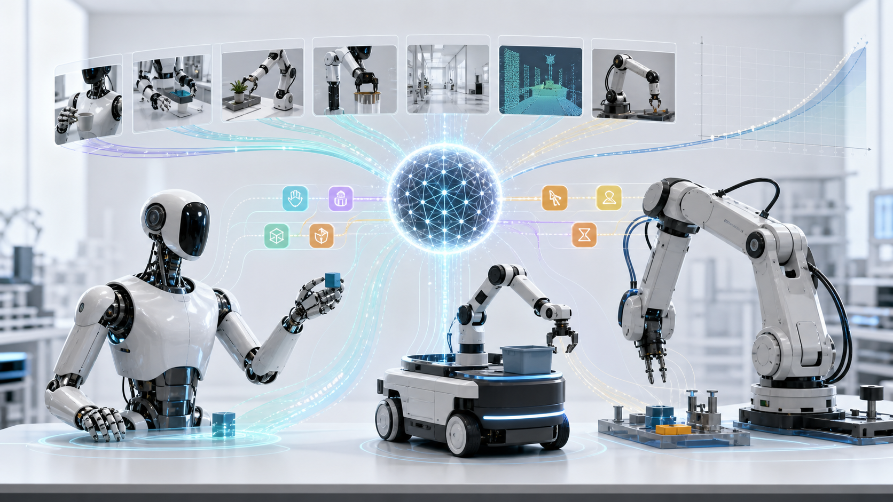

泛化机器人模型：跨本体迁移开始进入可验证阶段
2026 年春，Generalist AI 的 GEN-1 和 Physical Intelligence 的 π0.7 把行业讨论从“单个任务能不能跑”推进到“一个模型能否跨任务、跨场景、跨机器人本体迁移”。这并不意味着机器人已经通用，而是说明机器人基础模型开始出现可度量的泛化路径。
资料核对时间：2026-05-28。本文只采用官方发布、官方论文和 arXiv 论文中的公开口径；未披露的数据以“未披露”标注。

科普插图：不同机器人本体、任务经验与策略模型之间的关系。图片不代表任何公司真实设备。
GEN-1
Generalist AI 2026-04-02 发布，主打高可靠、高速度和少量机器人数据适配。
π0.7
Physical Intelligence 2026-04-16 发布，主打可提示、可组合、跨本体迁移。
50 万小时+
GEN-1 公开披露的高保真物理交互数据规模；π0.7 未披露总小时数。
两种 scaling
Generalist 给出更接近“幂律”的曲线；PI 更强调多样数据和元数据让规模变可用。
一张表看懂 GEN-1 与 π0.7
两者都在做“一个模型控制多类机器人和多类任务”，但公开证据口径不同：GEN-1 把数据规模和 scaling law 讲得更清楚，π0.7 把跨本体实验和提示机制讲得更细。
| 维度 |
Generalist AI GEN-1 |
Physical Intelligence π0.7 |
科普解读 |
| 发布时间 |
2026-04-02 |
2026-04-16 |
两者都是 2026 年 4 月公开的最新一代泛化机器人模型。 |
| 模型定位 |
“general physical AI model / system”，目标是简单物理任务的 mastery：可靠、快速、能恢复。 |
“steerable generalist robotic foundation model”，目标是用语言、元数据、控制模式和视觉子目标来引导动作。 |
GEN-1 更像把机器人技能推到可部署阈值，π0.7 更像把机器人模型做成可提示、可组合的策略系统。 |
| 跨本体能力 |
GEN-0 架构已测试 6DoF、7DoF、16+DoF 半人形机器人；GEN-1 的 1 小时机器人数据适配同时面对“新任务 + 新本体”。 |
在移动双臂、静态双臂、UR5e 双臂、单臂等平台上测试；UR5e 衣物折叠没有目标本体训练数据，仍出现零样本迁移。 |
跨本体不是更换外壳即可运行，而是模型能把“视觉、动作、控制方式、策略目标”重新对齐到新本体上。 |
| 公开数据规模 |
半百万小时以上高保真物理交互数据；GEN-0 公开口径为 27 万小时以上，且每周新增 1 万小时以上。 |
总小时数和轨迹数未披露；公开描述为多机器人演示、自动策略数据、人类干预、开源机器人数据、第一视角人类视频和网页辅助数据。 |
数据评估不宜只比较“小时数”。GEN-1 的口径强调物理交互规模，π0.7 强调数据来源、质量差异和提示标签如何被统一进训练。 |
| 机器人数据依赖 |
官方称基础模型预训练集不含 robot data；展示结果每个任务约 1 小时机器人数据。 |
训练集包含机器人数据和非机器人数据；无需对每个新任务都采集动作级遥操作演示，可通过语言 coaching 学新任务。 |
两者都在减少“每个任务都重新遥操作采数”的成本，只是路线不同。 |
| Scaling law 情况 |
GEN-0 给出模型规模、数据规模和下游误差之间的幂律关系；7B 附近出现明显能力阈值，GEN-1 是继续放大后的结果。 |
论文给出 scaling/ablation study：有元数据时，模型能从更大但混合质量的数据中继续受益；去掉最高多样性的 20% 数据会显著伤害泛化。 |
Generalist 讲的是“更多数据和更大模型可预测变好”；PI 讲的是“更多数据要配合更丰富上下文，否则可能越混越差”。 |
两张事实卡
下面只列已公开证据。需要注意的是，机器人模型发布中常有视频演示，但视频本身不能替代训练规模、测试口径和能力边界。
- 公开成绩
- 在展示任务上平均成功率从此前模型的 64% 提升到 99%，部分任务达到 99%+；折盒约 12.1 秒，约为既有公开 SOTA 的 2.8 倍速度。官方披露
- 数据规模
- 训练所依赖的数据集已超过 50 万小时高保真物理交互数据；官方称基础预训练不含 robot data，展示任务约 1 小时机器人数据。官方披露
- 跨本体
- GEN-1 的机器人数据适配被表述为同时适配新任务和新机器人本体；GEN-0 已公开测试 6DoF、7DoF、16+DoF 半人形机器人。GEN-1 没有在发布文中列出完整机器人平台清单。
- Scaling law
- GEN-0 已披露模型规模与数据规模 scaling：1B 模型会出现 data overload/ossification，6B 开始受益，7B+ 能吸收大规模物理数据；下游误差可用类似
L(D)=(D_c/D)^α 的幂律描述。
- 边界
- 官方明确说并非所有任务都能达到 99%+，且即兴恢复行为有真实物理后果，需要更强 alignment。
- 公开成绩
- 一个模型开箱完成灵巧操作、复杂语言指令和长程家庭任务；在多项灵巧任务上可接近或超过针对单任务微调的 specialist。官方论文
- 模型结构
- 约 5B 参数 VLA：4B VLM backbone、MEM 式视频历史编码器、860M flow-matching action expert；子目标图像由轻量 world model 生成。官方论文
- 跨本体
- 核心实验证据是从静态双臂到 UR5e 双臂的衣物折叠迁移：目标 UR5e 没有该任务训练数据，模型仍能生成适配目标本体的不同策略。
- 数据规模
- 未公开总小时数和总轨迹数。论文披露数据类型包括多机器人演示、自动策略评估、人类干预、开源机器人数据、第一视角人类视频和网页辅助数据。总量未披露
- Scaling law
- 没有公开幂律公式或指数；论文的 scaling study 显示，元数据让模型能从更大、混合质量更低的数据中继续提升，而高任务多样性数据对泛化很关键。
跨本体能力到底是什么
本体是机器人的“身体”：关节数量、手爪、底盘、相机位置、控制频率、可达空间都不同。跨本体能力就是把同一类任务知识迁移到不同身体，而不是简单复刻原机器人的动作轨迹。
核心难点不只是“看懂任务”，更在于“迁移到新本体执行”
LLM 可以把英语翻译能力和 JSON 格式能力组合起来；机器人模型要做类似事情时，还必须处理物理约束。比如同样是折衣服，小双臂机器人可能要双手夹起边角，UR5e 双臂因为手臂更长、更重，可能需要完全不同的抓取角度和单臂转移策略。
π0.7 论文里最有价值的部分，是它不仅展示“更换机器人后仍可完成任务”，还展示了目标机器人采用了不同于源机器人的策略。这说明模型不是机械模仿训练轨迹，而是在目标本体上重新组织动作。
GEN-1 的重点略不同：它强调基础预训练不靠传统机器人遥操作数据，而通过少量机器人数据完成对任务和本体的适配。如果这个方向继续成立，企业试点的采数门槛会显著下降。
跨本体迁移需要三层对齐
01
感知对齐
不同相机位置和视角下，模型仍要识别同一物体、同一阶段目标和同一错误状态。
02
动作空间对齐
单臂、双臂、移动底盘、UR5e 等本体的动作维度不同，控制模式也可能是关节空间或末端执行器空间。
03
策略目标对齐
模型要知道任务结果、速度、质量、是否允许犯错，以及下一步子目标；π0.7 用元数据和视觉子目标显式表达这些信息。
科普判断：跨本体不是“所有机器人通吃”，而是“同一基础模型在不同本体上能用少量或零额外动作数据达到可观察迁移”。这仍需要硬件接口、控制频率、安全约束和场景边界配合。
训练数据：规模、质量和标注方式同样重要
机器人模型的数据不像文本数据只看 token 数。它同时包含视觉、动作、力学反馈、控制频率、异常轨迹、人工介入、任务质量和场景多样性。
GEN-1：把物理交互做成数据引擎
Generalist 从 GEN-0 的 27 万小时以上扩展到 GEN-1 的 50 万小时以上，核心叙事是“物理交互数据越大，模型越可预测地变好”。它还强调用低成本人类穿戴设备收集物理活动，降低传统机器人遥操作采数成本。
π0.7：把混合数据变成可控训练信号
PI 没有披露总小时数，但披露了更多数据类型：机器人演示、自动策略、异常和低质量轨迹、人类视频、开源数据和网页辅助任务。它用 episode metadata 标注速度、质量、错误和控制模式，降低混合数据相互干扰。
数据评估不宜只看“小时数”
同样 1 小时数据，可能是高质量示教、异常轨迹、自动 rollout、人类第一视角视频或动作级机器人数据。管理层看供应商时，应追问数据来源、任务覆盖、异常样本、真实闭环评估和数据是否能持续新增。
- 动作轨迹
- 多视角视频
- 第一视角人类视频
- 异常轨迹
- 自动策略 rollout
- 任务质量元数据
- 控制模式标签
- 视觉子目标
Scaling law：机器人领域正在补上“可预测放大”的证据
在大语言模型里，scaling law 的意义是：更多数据、更多参数、更多算力会以可预测方式降低损失。机器人领域更复杂，因为误差不只是预测错字，还可能影响抓取、碰撞控制或任务完成率。
两种公开 scaling 证据
- Generalist：更接近公开幂律曲线
- PI：数据多样性和上下文标注带来的可扩展性
读 scaling law 时要问四个问题
A
横轴到底是什么
是参数、算力、小时数、动作轨迹数，还是任务多样性？不同横轴需要分开比较。
B
纵轴是不是闭环表现
验证损失下降很重要，但真实机器人成功率、速度、恢复能力和长时运行更接近商业价值。
C
是否跨任务同时变好
单一任务变好可能只是专项优化；多任务、零样本和跨本体同时提升，才更像 foundation model 的放大规律。
D
有没有能力边界
π0.7 明确说明未见任务或未见本体组合通常低于已见任务；GEN-1 也说明不是所有任务都能达到 99%+。
当前结论：Generalist AI 给出了机器人领域较清晰的 scaling law 叙事和公式化证据；Physical Intelligence 给出的是另一类关键证据，即数据规模只有在“上下文、元数据、子目标和控制模式”足够丰富时才会转化为泛化能力。
对企业和投资判断的含义
这两类模型尚未把机器人变成通用劳动力，但它们改变了评估供应商的重点：需要同时看数据引擎、迁移证据和 scaling 证据，而不是只看演示任务。
短期看任务边界
已见任务、受控场景、清晰物体和标准流程最容易受益；开放家庭、复杂服务和高安全责任任务仍要谨慎。
中期看数据飞轮
能够低成本采集真实物理交互，并把异常、自动 rollout 和人工修正变成训练信号的团队，更可能持续降低单位任务数据成本。
长期看本体生态
如果同一模型能跨多种机械臂、人形、移动双臂和专用末端迁移，模型层会从“绑定设备的软件”变成机器人行业的基础入口。
主要来源
来源以公司官方发布和论文为主；文中对“未披露”的标注来自这些来源没有公开相应总量。